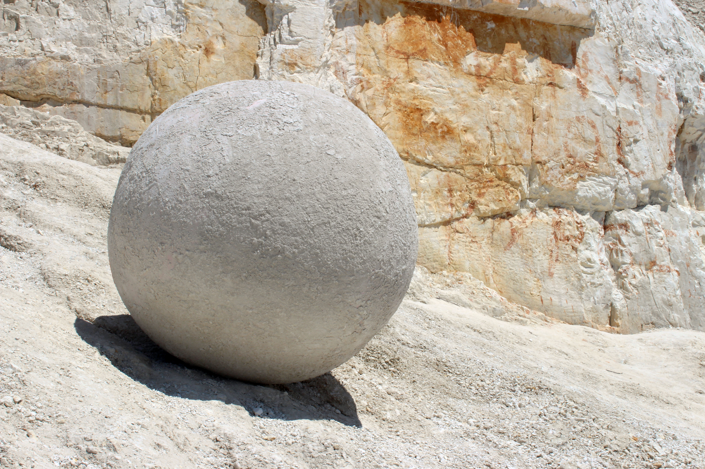

SPHERE
2021 · Land Art Symposium "Borderline Space", Mogrytsya, Symy region, Ukraine · Theme - Perfect material
Concept
The theme of this year’s symposium was Perfect Material. For Moghrytsia, we identified this material in its distinctive and historically layered chalk landscape. Chalk is not only a local geological substance, but also a defining element of the site’s identity.
We chose to contain this material within a geometrically “perfect” form, the sphere. This decision reflects both an idealized notion of form and a material logic: under microscopic observation, chalk particles themselves appear rounded. The work thus connects geological structure and abstract geometry, linking material specificity with conceptual precision.